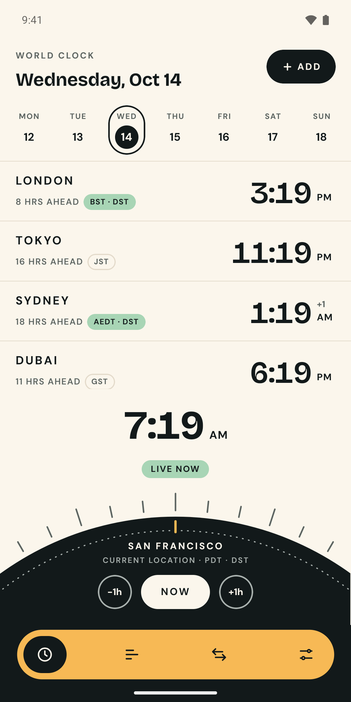

<!doctype html>
<!--
  Google Play store graphics for Hourline. Each frame wraps a REAL app screenshot from raw/ (captured on the
  emulator dev build) with a headline. Render one frame per URL: compose.html?f=<id> at a 1080×1920 viewport
  (feature graphic: ?f=feature at 1024×500). See marketing/README.md.
-->
<html lang="en">
<head>
<meta charset="utf-8">
<title>Hourline store graphics</title>
<link rel="preconnect" href="https://fonts.googleapis.com">
<link rel="stylesheet" href="https://fonts.googleapis.com/css2?family=Bricolage+Grotesque:opsz,wght@12..96,700..800&family=DM+Sans:opsz,wght@9..40,500..700&display=block">
<style>
  :root { --cream: #FBF6EC; --ink: #12191A; --apricot: #F7B955; --sage: #A8D5B5; --coral: #F29479; --lavender: #D9CFF5; --muted: #3F4846; }
  * { box-sizing: border-box; margin: 0; }
  html, body { width: 1080px; height: 1920px; overflow: hidden; }
  body { font-family: 'DM Sans', sans-serif; color: var(--ink); background: var(--bg); position: relative; }
  .copy { position: absolute; left: 96px; right: 96px; top: 120px; }
  .eyebrow { font-weight: 700; font-size: 30px; letter-spacing: 0.18em; text-transform: uppercase; opacity: 0.75; margin-bottom: 26px; display: flex; align-items: center; gap: 16px; }
  .eyebrow svg { width: 52px; height: 52px; }
  h1 { font-family: 'Bricolage Grotesque', sans-serif; font-weight: 800; font-size: 104px; line-height: 0.98; letter-spacing: -0.035em; white-space: pre-line; }
  p { margin-top: 30px; font-size: 38px; line-height: 1.32; font-weight: 500; color: var(--sub); max-width: 820px; }
  .shot { position: absolute; left: 50%; top: 610px; width: 780px; transform: translateX(-50%); border-radius: 64px; border: 8px solid var(--ink); overflow: hidden; box-shadow: 0 40px 90px rgba(18, 25, 26, 0.28); background: var(--ink); }
  .shot img { display: block; width: 100%; }
  .dark { --sub: #C9CFCC; color: var(--cream); }
  .dark .shot { border-color: var(--cream); box-shadow: 0 40px 90px rgba(0, 0, 0, 0.5); }
  .dark .eyebrow svg path, .dark .eyebrow svg line.t { fill: var(--cream); stroke: var(--cream); }

  /* Feature graphic 1024×500 */
  body.feature { width: 1024px; height: 500px; background: var(--ink); color: var(--cream); }
  .feature .brand { position: absolute; left: 64px; top: 70px; width: 520px; }
  .feature .brand .row { display: flex; align-items: center; gap: 22px; }
  .feature .brand svg { width: 104px; height: 104px; }
  .feature .brand .name { font-family: 'Bricolage Grotesque', sans-serif; font-weight: 800; font-size: 92px; letter-spacing: -0.03em; }
  .feature .brand .tag { margin-top: 30px; font-family: 'Bricolage Grotesque', sans-serif; font-weight: 700; font-size: 44px; line-height: 1.08; letter-spacing: -0.02em; }
  .feature .brand .sub { margin-top: 18px; font-size: 22px; color: #C9CFCC; font-weight: 500; }
  .feature .phone { position: absolute; right: 70px; top: 46px; width: 330px; border-radius: 40px; border: 6px solid var(--cream); overflow: hidden; }
  .feature .phone img { display: block; width: 100%; }
</style>
</head>
<body>
<script>
  // Mark: same geometry as the app icon (scripts/export-icons.mjs).
  const mark = (fg, accent = '#F7B955') =>
    `<svg viewBox="0 0 100 100" aria-hidden="true"><g stroke="${fg}" stroke-width="4.5" stroke-linecap="round">${[-45, -22.5, 22.5, 45]
      .map((a) => `<line class="t" x1="50" y1="44" x2="50" y2="37" transform="rotate(${a} 50 82)"/>`)
      .join('')}</g><line x1="50" y1="44" x2="50" y2="30" stroke="${accent}" stroke-width="5" stroke-linecap="round"/><path d="M18.2 70 A34 34 0 0 1 81.8 70 Z" fill="${fg}"/></svg>`;

  const FRAMES = {
    home: { bg: '--cream', sub: '#3F4846', img: '02-home', title: 'Every city,\nat a glance.', text: 'Live times, gaps and daylight saving for all your places, side by side.' },
    travel: { bg: '--apricot', sub: '#3A3220', img: '07-time-travel', title: 'Travel\nthrough time.', text: 'Drag the dial or tap a day. Clock changes are worked out for you.' },
    compare: { bg: '--sage', sub: '#24392C', img: '03-compare', title: 'Find the hour\nthat works.', text: 'Work, free and sleep hours across every city, plus the best overlap.' },
    convert: { bg: '--lavender', sub: '#353047', img: '04-convert', title: 'Convert any\ntime, anywhere.', text: 'Pick a date and time once. See it in every city, with UTC.' },
    dst: { bg: '--coral', sub: '#3F2219', img: '05-dst-alert', title: 'Never miss a\nclock change.', text: 'Know exactly when clocks go back or forward, and the new gap after.' },
    dark: { bg: '--ink', dark: true, img: '08-dark', title: 'Beautiful in\nlight and dark.', text: 'Follows your phone, or pick the look you like.' },
    setup: { bg: '--cream', sub: '#3F4846', img: '06-pick-cities', title: 'Set up in\nseconds.', text: '2,200+ cities and every time zone, searchable offline.' },
  };

  const id = new URLSearchParams(location.search).get('f') || 'home';
  if (id === 'feature') {
    document.body.className = 'feature';
    document.body.innerHTML = `
      <div class="brand">
        <div class="row">${mark('#FBF6EC')}<div class="name">Hourline</div></div>
        <div class="tag">Every time zone,<br>any moment.</div>
        <div class="sub">World clock · converter · meeting planner</div>
      </div>
      <div class="phone"></div>`;
  } else {
    const f = FRAMES[id];
    document.body.style.setProperty('--bg', `var(${f.bg})`);
    if (f.dark) document.body.classList.add('dark');
    else document.body.style.setProperty('--sub', f.sub);
    document.body.innerHTML = `
      <div class="copy">
        <div class="eyebrow">${mark(f.dark ? '#FBF6EC' : '#12191A')}Hourline</div>
        <h1>${f.title}</h1>
        <p>${f.text}</p>
      </div>
      <div class="shot"></div>`;
  }
</script>
</body>
</html>
